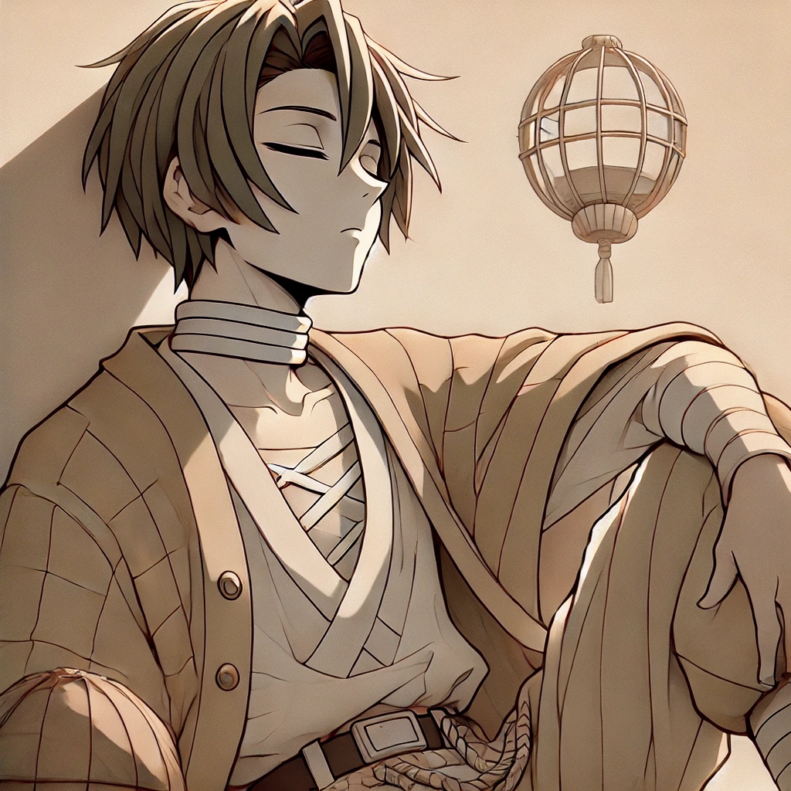
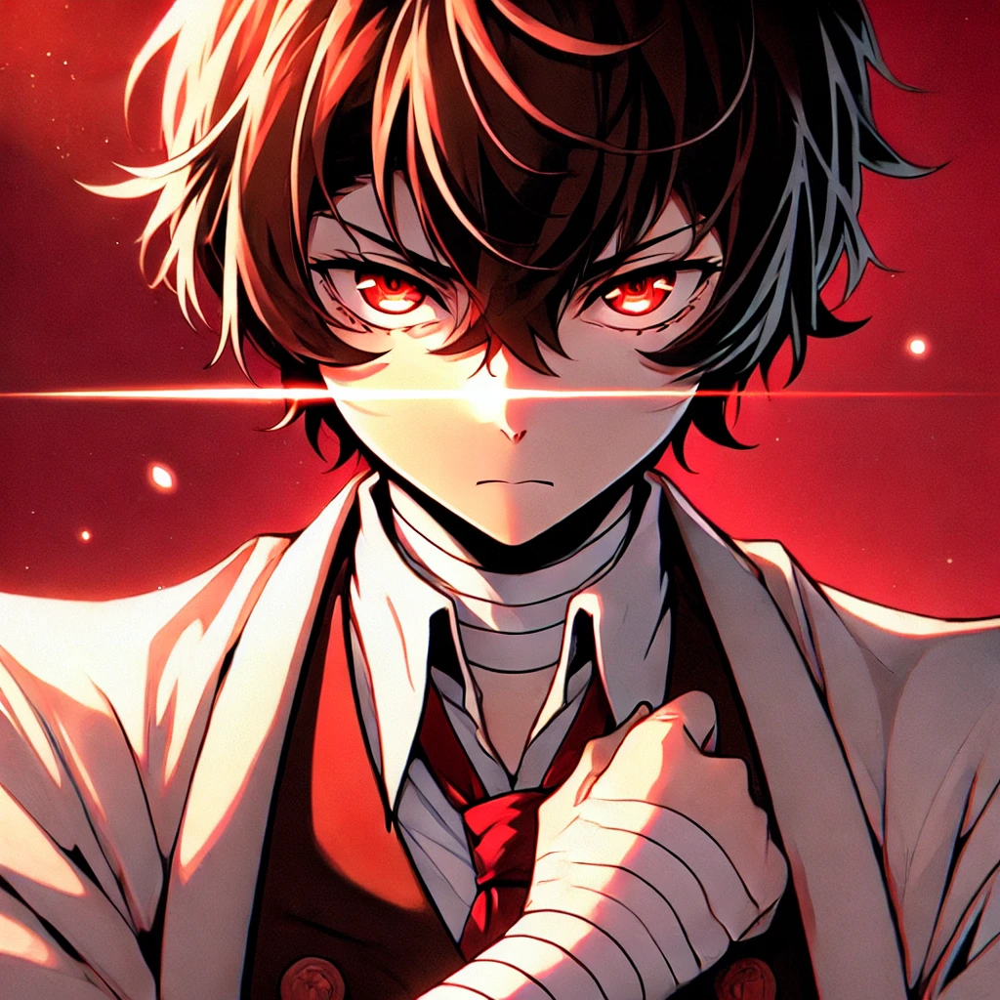
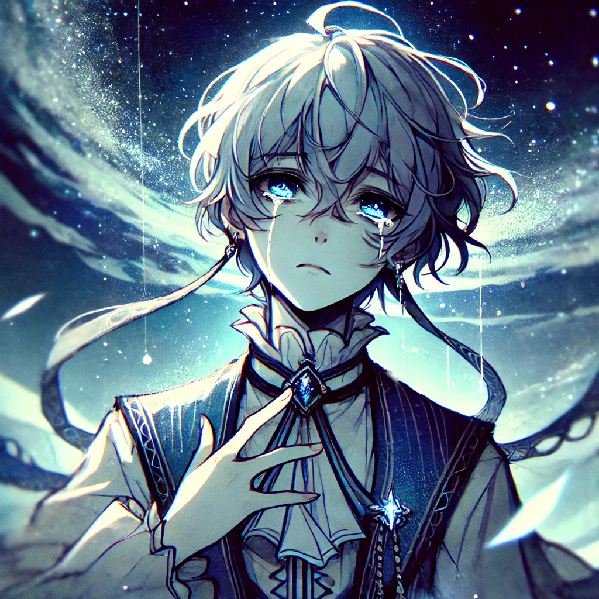
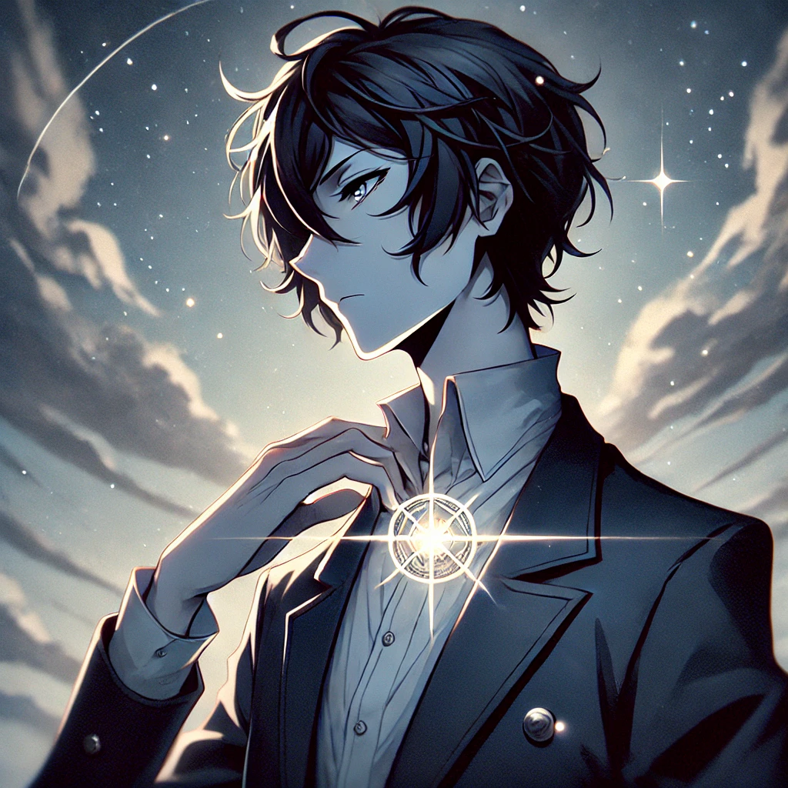

Emocional Control
Emocional Control é um jogo de cartas estratégico, que não só envolve o pensamento tático do jogador como ao mesmo tempo requer cuidado com as interações sociais com NPCS durante o jogo.
Como tudo começou
o jogo se baseia em uma realidade onde seres humanoides carregam joias em seus corpos, cuja suas corres representam seu sentimento dominante, com base nisso, um jogo foi criado, um duelo estratégico de cartas onde não só sua estratégia é posta a prova como sua frieza, pois as cartas se ligam as joias do usuário mudando conforme seus sentimentos, após o jogo ter ficado mundialmente famosos novas formas de jogar vieram, em torneios oficias, cladestinos e até em regiões sombrias onde o prêmio é muito mais do que dinheiro ou troféus.
Mecanicas principais
Basicamente se começa escolhendo seu personagem que representariam sua dificuldade de jogo, você iniciara seu jogo com um deck inicial baseado em cada personagem, mas lembre-se seu deck não é fixo, pois ele se baseia no sentimento que seu persongem principal sente no momento, portanto para melhor jogabilidade será necessário não só participar dos duelos como construir conexões com NPCS que estarão espalhados pelo mapa, pois eles serão sua principal forma para manipular seus sentimentos, o jogo terá um mundo semi-aberto onde o jogador poderá escolher determinado caminho a seguir, podendo ser normal, sombrio ou assustador.
Personagens e baralhos inicias
Haverão 5 personagens principais que serviram como dificuldade de jogo
Parcimonia(muito fácil) o baralho inicial de parcimonia é básico e de fácil manipulação, podendo montar um baralho da maneira que quiser e sendo fácil transforma-lo em outro quando quiser, facilitando muito a mecãnica de joia sentimento.

Alegria(fácil) o baralho inicial de alegria é composto por cartas que se complementam, dando vantagens para si próprias, um baralho onde acumular cartas é facil e quase te garantem uma vitória, umas vez que suas cartas estiverrem fortes demais para seu oponente derrotar é GG.

Raiva(normal) Raiva possui um baralho totalmente ofensivo, sem nenhuma carta de magia ou defesa, o impossibilitando de resistir a muitos ataques, mas seu dano ofensivo é monstruoso, batalhas podem ser terminadas em questão de segundos com seu baralho mas perde se torna fácil quando não se possui defesas.

Tristeza (normal) Tristeza é o oposto de raiva, seu baralho se baseia em cartas de defesa, quase sem nenhum ataque, suas defesas são fortes mas fazem com que o oponente consiga encher o campo com cartas de ataque que em algum momento ficarão fortes demais para suas defesas antes impenetráveis.

vazio (dificíl) o Baralho inicial do vazio é complicado pois possuindo uma emoçao de irrelevãncia, suas cartas não tem efeito algum, obrigando o jogador a alterar seus sentimentos o quanto antes já que sem efeitos sua derrota é quase certeira.

Duelos e relações
em Duelos cada jogado tem 100 pontos vitais, perdendo quando chegar os pontos vitaisem zero ou quando 20 rodadas se passarem, você começa com 5 cartas nã mão e possui um baralho com 20 cartas cada, possuindo seus custos e habilidades variádas, uma moeda é jogada para ver de quem será o primeiro turno, após isso o jogo se desenrola, você puxa uma carta de seu deck a cada turno, cada carta possui determinado custo podendo custar pontos vitais ou a vida de outras cartas, isso em um jogo oficial, uma de suas principais mecãnicas é também o telefone, cujo pode ser usado para chamar NPCS assim alterando seu humor com uma conversa rapida que não afetará seu relacionamento fora de duelos.
Relacionamentos
Durante o jogo você poderá usurfruir de várias maneiras para adquirir relacionamentos com npcs, como converssas, encontros, presentes e até duelos, tudo isso aumentará ou diminuirá sua barra de relação com eles, existem vários NPCS no jogo com estéticas e personalidades diferentes para você se aventurar assim passando a ter um novo melhor amigo ou até quem sabe alguém ainda mais importante.
Voltar para minhas produções